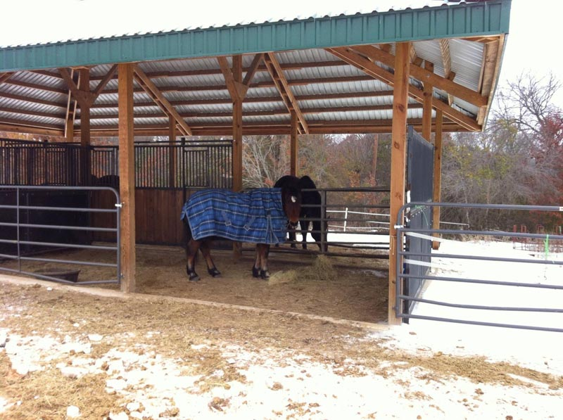

12/12/2012
Update on the Barn
We spent the last year or so figuring out what worked and doing updates.
First was dealing with the water and drainage. Mats were good when it wasn't wet, but after it rained they didn't work so well.
We concreted the aisle and around the perimeter first. That kept water from coming in, but the drainage off the roof made it a mess
for feeding whenever it rained.
The final concrete pour was an apron around the outside under the overhang.
We also added walls for the hay storage which protects it from the weather and the always hungry horses.
Gate panels fit across the openings to keep things open and air flowing. Finding
some stall kits on Craig's List made things more secure.
I'd always like more mats on the concrete, but the layout is working nicely now.
As it is now. It's divided with one double stall facing the larger pasture and the
aisle open to the smaller pasture where the horses stay during the day. We'll see
how the retaining wall holds up.

I prefer the stall panels, but when it's hot they really prevent the air flow, so
the stall gets panel gates that can be configured to create two stalls or one double.
Before the stall walls and staining.
How it was when it was first built. Dirt floor with mats and tape around the hay.
Thistle started ignoring the tape, I wanted to store more hay and we started doing
upgrades.
After a few good rains I could see that the mats didn't help and being at the bottom
of a slope water was draining through the barn.

When it was dry the layout was very convenient and open for our Texas summers.
The walls up for the corner hay stall and the concrete being poured for the aisle.

With the wall and the concrete floor we could store more hay and the horses didn't
have to eat off of or stand in mud. Walking around to the hay stall and feeding
were still muddy for the feeder, though.
I like looking out and seeing the lights on at night. I find the architecture pretty.
The apron around the outside gives more space for standing out of the rain and more
space for separating out for feeding.
The obvious lip keeps water out of the 3 stall areas that we didn't concrete. If
it ever has regular stalls they will be in the area that is dirt with rubber mats.
3/06/2011
I found the plans on the internet and hired a builder with a crew to get the main structure done.
It was up in a week, and the horses watched the entire process.
Next is figuring out fitting out the stalls. The plan is for it to be a 3 stall shed row when I'm done.
Since it's starting to warm up here I'm in no hurry to get the walls up.
Right now I'm investigating stall mats and stall fronts. Maybe we can buy a little at a time and be ready for the next winter.
Getting it square and laying out the corner posts had to be very precise.
Ready for the fun work. It was exciting when it started taking shape.
I liked how the design used some features to make building easier. I also like the
massive posts and doubled 2x8 rafters.

Almost ready for the metal roof.
I know the hip roof takes longer with all the metal cutting, but I really like how
it looks.
This is the part I like. Not trusses, but an open, interesting roof structure.

The horses get to use 1/2 of it. One side is open to the pasture with the trees
and the other side is open to the main grass pasture. Once there are stalls, we'll
have to see how it all works. I do want mats down, so they can stop eating their
hay off the dirt.
Now we've got their hay stored on this side of the electric tape. It's easier than
hauling it from the garage. That might be the first stall to get built, so it's
protected all the way around.